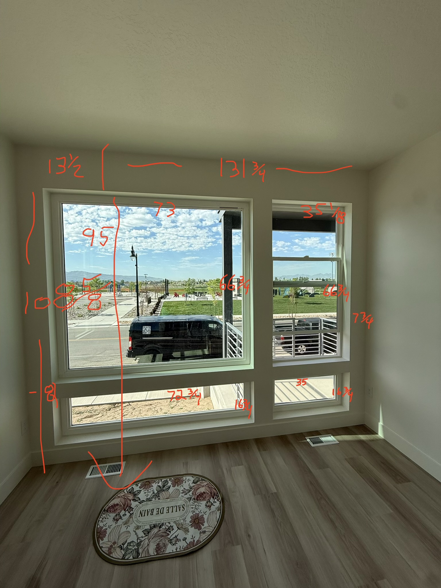

Get accurate measurements the first time. This guide covers inside mount, outside mount, common obstructions, and a fraction-to-decimal conversion table.
An inside mount shade fits entirely within the window frame — the shade hangs inside the casing and gives a clean, built-in appearance. This is the most popular style when the frame is deep enough to accommodate it.
Your window frame must have at least 2‑3/4 inches of clear, unobstructed depth — measured from the face of the opening straight back — for an inside mount shade to fit. If your frame is shallower, or if handles, cranks, or sensors occupy that space, you must switch to outside mount. We verify this on every in-home measurement.

An inside mount shade must clear the frame on both sides as it raises and lowers. We subtract approximately 1/4” to 1/2” from the width you provide before the shade is cut — the exact amount varies by product. That is why you measure the true opening and let us do the math. Never pre-deduct before ordering.
Call or text any time — 24/7. Or book a free in-home measurement and we handle everything.
An outside mount shade mounts on the wall, trim, or ceiling above the window opening. The shade covers the entire frame and extends beyond it on both sides. This style works for any window regardless of depth and is the best choice for maximum light blockage.
For outside mount roller or cellular shades, the width can be based on the outside width of the window frame, casing, or sill. For better light control, we recommend extending the shade 1–2 inches past each side of the frame when possible. For the strongest installation, the final width should also consider where the brackets can hit solid framing or studs.
Outside mount height should include enough room above the frame for the product hardware. Roller shades may need extra height for brackets, fascia, cassette, or roll size. Cellular shades may need extra height for the headrail and fabric stack when the shade is raised. The final height should be adjusted based on the selected product.
Light leaks in around the sides when the shade isn’t wide enough. For blackout needs — bedrooms, home theaters, nurseries — we recommend 3”–4” overlap per side. Ask us about side-channel cassette shades for near-total blackout results.
Call or text any time — 24/7. Or book a free in-home measurement and we handle everything.
Before you measure, walk through each window and check for anything that may affect your mounting option. Use the groups below to identify issues before ordering.
Measure from the face of the frame opening straight back to the first obstruction (glass, sash, handle, or sensor). If clear depth is less than 2–3/4”, choose outside mount.
Measure after all trim and casing are installed — not over rough openings.
Casement or awning cranks that protrude into the frame opening reduce usable depth and physically block the shade. Use outside mount or a shallow-profile product instead.
Windows that tilt inward for cleaning will be blocked by an inside mount shade. You would not be able to open or clean the window without removing the shade each time.
Sensors mounted in the inside corner of the frame reduce the usable opening and can prevent the shade from traveling properly. Relocate the sensor or switch to outside mount.
Remove the screen before measuring. Screens add a small amount to the effective opening and are typically reinstalled after shade installation, not before it.
Some windows have integrated blinds inside the double-pane unit. These windows often have very shallow usable depth. Measure carefully — inside mount may not be possible.
Grilles applied to the glass face can interfere with the bottom bar of a shade. Inside mount is often still possible — note the grille configuration when ordering so we can verify clearance.
Handles on the exterior of the window do not affect inside depth at all. No clearance issue.
Side-hinged casements that swing outward are fine as long as the crank is not inside the frame opening. Measure with the window closed.
Multi-pane glass units do not affect inside mount. The frame geometry is all that matters — pane count has no impact.
Most inside mount roller and cellular shades can be tilted or unclipped from their brackets for window cleaning. No need to permanently remove the shade.
If you are renovating, wait until all window trim, casing, and stool are completely installed before measuring. These components reduce the usable frame opening. Measuring rough openings will give incorrect dimensions.
Call or text any time — 24/7. Or book a free in-home measurement and we handle everything.
All shade measurements should be to the nearest 1/8 inch. Our order forms accept both fraction format (36-1/8) and decimal format (36.125) — both are identical and either is accepted.
| Fraction | Decimal equivalent | Example on a 36” window |
|---|---|---|
| 1/8” | 0.125” | 36‑1/8” or 36.125” |
| 1/4” | 0.250” | 36‑1/4” or 36.250” |
| 3/8” | 0.375” | 36‑3/8” or 36.375” |
| 1/2” | 0.500” | 36‑1/2” or 36.500” |
| 5/8” | 0.625” | 36‑5/8” or 36.625” |
| 3/4” | 0.750” | 36‑3/4” or 36.750” |
| 7/8” | 0.875” | 36‑7/8” or 36.875” |
A metal-blade tape measure gives you the most accurate reading. Cloth tape measures stretch over time and can read 1/4” or more off. Flexible plastic tapes have the same problem. A standard 16-ft or 25-ft metal tape is ideal for window measurements.
Always measure each window a second time before writing anything down. If the two readings differ, take a third and use the smaller of the three for inside mount width. Custom shades cannot be returned once cut — accuracy upfront prevents costly remakes.
Type fractions using a hyphen and slash: 36-1/8 means 36 and one-eighth inches. You can also type the decimal: 36.125. Both produce identical results. Never round to the nearest whole inch — the 1/8” increments are critical for a proper fit.
Call or text any time — 24/7. Or book a free in-home measurement and we handle everything.
Drapery uses a different measuring process than roller or cellular shades. For drapery, we need architectural measurements of the window, surrounding walls, ceiling height, obstructions, and door handle direction when applicable.
Please take clear photos of the full window or door, the surrounding wall area, the frame, nearby furniture, TVs, trim, ceiling, and floor. These photos help determine rod placement, stack space, and finished drapery height.
Rod height recommendation: As a starting point, rod height is often placed about halfway between the top of the frame and the ceiling. Final height may change depending on hardware style, ceiling height, stack space, and finished drapery length.
Cuts = (Rod Width × 2.5 fullness) ÷ 54. Round up to the next whole cut.
Approximate pleats = Cuts × 5.
Approximate carrier stack = Pleats × 0.625 inches.
For split draw, divide stack by 2 and round up.
For one-way draw, do not divide the stack.
Add approximately 4 inches of overlap per panel where needed. Add 1–2 inches of extra “fluff” allowance for visual fullness and ease of operation.
Call or text any time — 24/7. Or book a free in-home measurement and we handle everything.